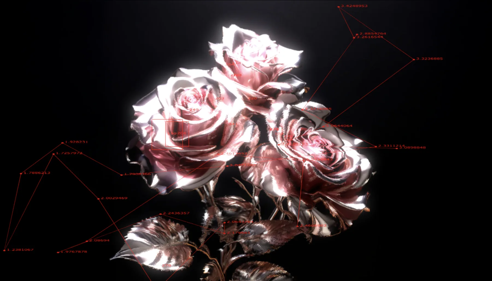
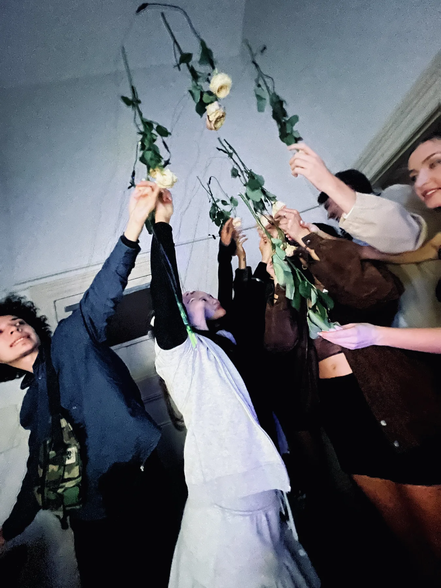

Ongoing body of work / 2024—
Meta Rose
An evolving world of roses, touch, colour, sound and moving image.

Project
Each chapter begins with a new emotional question and becomes a newly composed encounter.
Meta Rose is the central framework of Minnie Park’s practice. Since 2024, it has unfolded through distinct chapters, each beginning with a new emotional question and taking form through a newly composed visual, sonic and spatial system.
Real roses, pink and touch return as a signature language, alongside opposing states: bloom and decay, tenderness and friction, life and death. Across every chapter, their roles and relationships change. The rose can become interface, image, body, memorial or data trace.
The chapters create their own encounters while extending a larger artistic world—from emotional duality in Origin, to culturally situated feeling in Meta Kibun, relational touch in Shared Resonance and the rituals of Naming, Intervention, Witness and Record in The Funeral.


